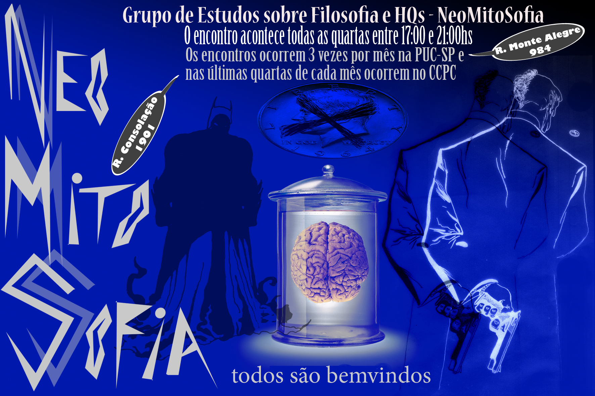

NeoMitoSofia
O grupo de estudos NeoMitoSofia, gerou várias produções visuais, além do site, criei algumas comunicações visuais para os encontros que promovemos. Artes feitas principalmente a partir de colagens digitais.

Primeira página da promoção do primeiro café-filosófico organizado pelo NMS

Segunda página da promoção do nosso primeiro café filosófico
Um flyer para divulgar nossos encontros

A capa do projeto que escrevemos para o concurso VIVA LEITURA